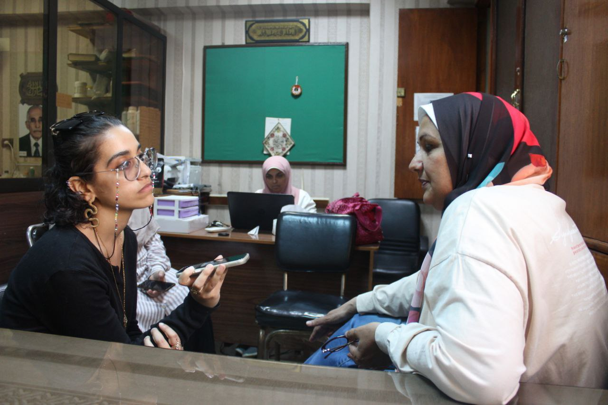

دق ناقوس خطر التغيرات المناخية على المحاصيل الزراعية
- يشهد العالم آثارًا واضحة للتغيرات المناخية، حيث ظهرت التأثيرات السلبية على، الصناعة، والمياه، والتنوع البيولوجي، وكذلك على الزراعة وجودة المحاصيل في مصر، حيث تواجه الحركة الزراعية تحديات خطيرة،و يعتمد الاقتصاد المصري بشكل كبير على إنتاج المحاصيل الزراعية كمصدر رئيسي للأمن الغذائي، والدخل القومي. وقد أدت التغيرات المناخية تأثيرات مثل: ارتفاع منسوب مستوى سطح البحر وتأثيره السلبي على المناطق الساحلية، وارتفاع أو انخفاض درجة الحرارة عن معدلاتها الطبيعية، زيادة الأحداث المناخية المتطرفة، وزيادة معدلات التصحر، إلى مواجهة تحديات للزراعة المصرية وحركة الإنتاج والأمن الغذائي. هذه التغيرات تؤثر على نوعية التربة والموارد المائية المتاحة، مما يؤدي إلى تقليل إنتاجية الزراعة وتدهور جودة المحاصيل. ولتحقيق حلول فعّالة ومستدامة، يتطلب الأمر جهودًا مشتركة من قبل الحكومة والقطاع الخاص والمجتمع المدني.
- وضح دكتور علاء احمد سرحان و هو :(وكيل لشئون خدمة المجتمع وتنمية البيئة بكلية الدراسات العليا والبحوث البيئية بجامعة عين شمس، و أستاذ و رئيس قسم بالكلية ايضاً) أن ظاهرة الاحتباس الحراري تؤدي إلى زيادة درجة حرارة سطح الكوكب، مما يسبب التغيرات المناخية وزيادة البخر وارتفاع مستوى المياه على سطح الأرض. يصاحب ذلك ظروف جوية متطرفة،"أي يأتي في مناطق صيف شديد الحرارة جداً وشتاء شديد البرودة جداً"، مما يقلل من كميات المياه المتاحة بسبب الجفاف المتزايد، ويؤثر على المحاصيل والحياة البرية والتنوع البيولوجي، خصوصاً الكائنات المهددة بالانقراض. هذا يؤثر على تناغم توازن النظام الإيكولوجي،"هي مسؤولة عن توزيع سلالات النبات و الحيوان" و خلل بالتوازن البيئي، ويزيد من التصحر وتآكل السواحل البحرية. "كما أظهرت القياسات العلمية أن العام الماضي ٢٠٢٣ كان أحد أكثر الأعوام حرارة في تاريخ مصر". مع زيادة درجة الحرارة وانخفاض نسبة الرطوبة، ويؤدي ايضاً يزداد احتمال حدوث حرائق الغابات وتأثر البنية التحتية مثل الشوارع والطرق والمنشآت، وأشار أن تأثير التغيرات المناخية على المحاصيل الزراعية بشكل خاص، ادت الى اضطرابات بالمواسم الزراعية و التوقيتات الزراعية، و عند ارتفاع مستوى سطح المياه، فمن الممكن أن تزداد التربة ملوحة" اختراق من مياه البحر مياه التربة الزراعية، و تطبل الأرض الزراعية"، وفقدان التنوع البيولوجي يؤثر على عمليات التلقيح النباتات، و يؤثر أيضاً على مكافحة الآفات بشكل طبيعي، و دورة غذاء النبات، و له تداعيات خطيرة جداً على الأمن الغذائي،"فلذلك يجب الوصول إلى ممارسات زراعية قادرة على تصدي التغيرات المناخية". فيما يتعلق بالزراعة، يتضح أن "كل محصول يتأثر بتغير مناخه وتربته، مما يؤدي إلى تغيير خصائصه، مثل القطن المصري الذي يتوفر منه أنواع مختلفة مثل طويل التيلة وقصير التيلة، تتفاوت في خصائصها بحسب درجة الحرارة والتربة". ومع تغير العوامل الجوية،و بالنسبة للآفات الزراعية يتغير نموها أيضاً، وظهور أمراض جديدة، مما يستدعي تغيير المقاومات الزراعية لمواجهتها، وهذا أمر في غاية الخطورة بسبب تغير المناخ يعسف من حركة الباحثين على سلالات مقاومة،بوجود تغيرات مناخية، يتأثر إنتاج وجودة العديد من المحاصيل مثل "القمح والقطن المصري وفول الصويا والذرة وهي محاصيل رئيسية"، مما يؤثر على الأمن الغذائي للدولة ونصيب الفرد، وتتكبد الدول خسائر اقتصادية، كل هذا بسبب فشل عملية التمثيل الضوئي للنباتات الزراعية نتيجة للتغيرات المناخية.
- وصرح أيضاً بضرورة اتباع إرشادات لمواجهة التغيرات المناخية، "يوجد جانبان في منتهى الأهمية في استراتيجيات خطة عمل أي دولة لمواجهة التغيرات المناخية، فهما: التكيف و التصدي ،والتخفيف بالتخفيف هو: ان كل دولة لها نصيب في الانبعاثات الكربونية على مستوى الكوكب، فلذلك يجب على كل دولة أن تقوم على تخفيف الانبعاثات الكربونية، و غاز الميثان أيضاً، و الدولة المصرية بالفعل تنفذ أجندة التغيرات المناخية، ولديها خطة استراتيجية للتغيرات المناخية وهي الاستراتيجية الوطنية للتغيرات المناخية عام ٢٠٥٠، و أيضاً لديها خطة عمل يطلق عليها بالمساهمات الوطنية(N.D.C)المُعدلة، فمثلاً قطاع النقل والمواصلات،و تعمل على خطة لتصنيع السيارات الكهربائية، و غيرها من خطط، في المنشآت الخضراء ،والطاقة النظيفة والمتجددة، و نأتي للزراعة فهي تؤثر أيضاً و تساهم في التغيرات المناخية فبعض أنواع الزرعات الأرز على "سبيل المثال: الأرز يحتاج إلى كثير من مساحات المياه زراعته وذلك يساهم في انبعاث غاز الميثان، وعملية تربية الأغنام تند تغذيتهم ينبعث منهم غاز الميثان بسبب عملية الهضم، في الدولة تقوم بعمل بحث علمي يقوم على إيجاد علف أو غذاء يساعد على عملية الهضم دون انبعاث غاز الميثان، و كانت الانبعاثات لمصر حوال ٧. ٪ على مستوى العالم وهذا قليل جداً" ولكن تلتزم مصر بالحفاظ على المناخ. في الجانب الثاني من الخطة وهو التكيف و التصدي، " يركز التكيف و التصدي على حماية الذات واتخاذ إجراءات استباقية ووقائية لتقليل تداعيات تلك التغيرات والتصدي لها بشكل إيجابي،على سبيل المثال في مجال الزراعة، يمكن اتخاذ خطوات مثل تطوير سلالات جديدة مقاومة للتغيرات المناخية والقيام بأبحاث في مجال الهندسة الوراثية الزراعية لتحديد الحلول المناسبة. وبالنسبة للاقتصاد، يمكن التصدي بتبني إجراءات تسهم في تحمل تلك التغيرات، بالإضافة إلى تنفيذ مشاريع لترشيد استهلاك المياه واستخدام تقنيات الري بالرش والتنقيط بدلاً من الري بالغمر، وتعديل خريطة الزراعة لتناسب الظروف المناخية الجديدة و الجفاف، مثل زراعة بنجر السكر بدلاً من قصب السكر لتقليل استهلاك المياه"، مع الاخذ بالاعتبار ان السكر محصول رئيسي.
- نوه على دور التكنولوجيا في تحسين القطاع الزراعي في مواجهة هذه التحديات ، ويتضمن استخدام التقنيات الحديثة لتوجيه المزارعين إلى أفضل وقت سقي التربة، من خلال تقديم توجيهات عبر الهواتف المحمولة وعمليات توعية فعالة. وتدعم اتخاذ القرارات الزراعية بناءً على تنبؤات المناخ، وتسهم في استخدام الهندسة الزراعية الوراثية لتطوير سلالات نباتية مقاومة مع الظروف المناخية المتغيرة. ، يمكن استخدام تقنيات الري الحديثة مثل الري بالرش والتنقيط والاستشعار عن بعد لترشيد الاستهلاك، ودور المواطن اتخاذ خطوات ايجابية مثل استخدام المنتجات المستدامة والحفاظ على البيئة. على الجانب البيئي، يجب علينا أيضًا التركيز على إعادة التدوير والتخلص من النفايات بشكل مسؤول، كما ينبغي على الحكومات توجيه توصيات وتقديم الدعم للمزارعين من خلال تقديم الإرشادات الزراعية المناخية وتنظيم دوريات التوعية بالتغيرات المناخية، والحث على تنفيذ الأساليب الزراعية المستدامة مثل الري بالرش بدلاً من الري بالغمر. باختصار، "يجب علينا جميعًا ان نكون جزء من الحل وليس من المشكلة."
- اوضحت د. سوزان عيد و هي ( باحث أول، أستاذ مساعد بمعهد أمراض النبات بمركز البحوث الزراعية، ومدير معمل المرجعي للتنوع الجيني للمبيدات النباتية الميكروبية)، إن التغيرات المناخية تُسبب مشاكل هائلة في مجال الزراعة، يُعتبر "شيف التوقيتات الزراعية" أحد أهمها، حيث يتطلب كل محصول توقيتًا محددًا للزراعة يتناسب مع ظروف المناخ المناسبة له، وهذا لم يعد متاحًا بشكل مستمر بسبب التغيرات المناخية غير المستقرة، حيث يختلف كل عام عن الآخر في درجات الحرارة والظروف الجوية "نواجه منذ فترة أزمة خطيرة في مجال الزراعة، حيث شهدنا موسمًا من مواسم زراعة البطاطس خال تمامًا من الإنتاج، وهذه المشكلة جديدة ولم يتم العثور على حل ناجع حتى الآن، بسبب غياب لجنة سيادية مختصة بمعالجة الطوارئ. ونتيجة لذلك، تأتي الأوقات التي يفترض فيها توفر محاصيل رئيسية بلسوق و لن يتم توافرها مثل بطاطس أو طماطم، كما حدث في العام الماضي بمحصول المانجو انخفاض إنتاجه بسبب عدم وجود عقد بالزهرة ( العقد هو تحول الزهرة إلى ثمرة)، مما أدى إلى تساقط الزهور بسبب ارتفاع درجات الحرارة، و ظهور ايضاً مرض العفن الهبابى بها وهو يؤثر على جودة الثمار ويقلل حجم الإنتاج، ويعمل على سرعة تلفها و عفانها بالمخازن" و أصبحنا نواجه مشكلتين، الاساسية هي ان النباتات تتعرض لظروف مناخية ليست باحتياجاتها الملائمة لنموها، و الثانيه هي : أن النباتات اصبحت اكثر عرضه للامراض وبسبب وجود آفات تكن كامنة لا تظهر إلا في الحرارة المناسبة لظهورها "نواجه مشكلتين أساسيتين: الأولى هي أن النباتات تتعرض لظروف مناخية غير ملائمة لنموها، والثانية هي أن النباتات أصبحت أكثر عرضة للأمراض، حيث تظهر بعض الآفات في الظروف المناسبة لها، مثل ظهور الفطريات في نهاية دورة حياة النباتات عند ارتفاع درجات الحرارة. "ومن أمثلة هذا التحدي تطبيقًا على محصول السمسم، حيث يظهر الفطر (الميكروفومينا) في نهاية دورة حياته، ويجب ضبط توقيت زراعته لضمان ظهوره في الوقت المناسب، ولكن تغيرات المناخ قد تؤدي إلى ظهور هذا الفطر في منتصف دورة حياة النبات، مما يؤدي إلى إتلاف في الإنتاجية المحصول، وتهديد صحة النباتات"،وأشارت لفصل الشتاء أصبح الآن درجة الحرارة ليلاً تصل إلى درجة الصقيع، وذلك لم يكن موجود من قبل، فبدأت تتفشى الأمراض التي تنشط على درجات الحرارة المنخفضة وتميل للصقيع، و "عند المواجهة تكون صعبة لأننا لا نمتلك استراتيجيات العلاج، ومثال على ذلك محصول القمح العام القبل الماضي ظهر مرضين جُدادالسنابل البيضاء و هذا المرض ينشط بالبروده الشديده، تميل للصقيع ليلاً و نهاراً درجة حراره معتدله، فالبتالي بدء ظهور هذا المرض، كان يوجد زمان في سيناء ومناطق الزراعة بالقرب منها لارتفاع لانخفاض درجات الحرارة بها، أما بالوقت الحالي بدأ يظهر بعدة مناطق زراعية تبعد عن سيناء"، واشارت الى استخدام اسلوب بيلوچي لمكافحة الآفات الحديثة وهي فطريات الميكوريزا " فهي فطريات تقوم بعمل تبادل منفعة مع النبات، فهو علاج بيولوجي يستخدم لتقوية النبات و تحمل ظروف المناخية الصعبة"
- صرحت عن افتتاح معمل(المعمل المرجعي للتنوع الچيني للمبيدات النباتية الميكروبية) و هي من أحد المديرين به، وتعمل هي و فريق البحث و العمل على دراسات تأثيرات التغيرات المناخية على أمراض النباتات، وتطورها على المحاصيل المختلفة، وتستخدم في علاج ذلك الكائنات الحية الحيوية ، لتجعل النبات اكثر تحمل و قوة لهذه المخاطر، والعمل عن البحث عن مقاومات مضادة لهذه الآفات الجديدة.
- أوضحت الدكتورة سوزان أن التغير المناخي الحالي يحمل معه جانبًا إيجابيًا، حيث كانت بعض الدول تعتمد على مناخ مشابه للمناخ الحالي وكانت تزرع فيه بنجاح، وهذا يشير إلى ضرورة التفكير في استراتيجيات جديدة والتكيف مع التغيرات المناخية. "يجب علينا تغيير الفكر و تغير خريطة الزراعة بمصر، فمثلاً امنع زراعة البطاطس بمناطق بالعروة ذات درجات الحرارة العليا، والعمل على الجانبان معاً، هما تغير خريطة السياسة الزراعة، والبحث عن أصناف مقاومة للتغيرات المناخية"، وأكدت على أهمية التحول و التبادل بين الدول في سياسات الزراعة لتناسب المحاصيل التي تتحمل الظروف الجوية الجديدة، ومن ثم تحقيق الإنتاجية وتجنب الخسائر على المزارعين. وأشارت ظهور محاصيل زراعية جديدة ، مثل زراعة البن لأول مرة في مصر، و الأناناس، كمحاولة لتعزيز الاستهلاك المحلي وتعزيز فرص التصدير. وأبرزت الحاجة إلى التعاون الدولي في توزيع المحاصيل وتقسيم العمل حسب التوجهات المناخية الجديدة، مع التركيز على البحث عن أصناف محاصيل تتحمل التغيرات المناخية المتزايدة. وأخيرًا، شددت على أهمية موازنة الجهود بين تغيير السياسات الزراعية والبحث العلمي لتطوير أصناف مقاومة للتغيرات المناخية كخطوتين أساسيتين لمواجهة التحديات الحالية وضمان استمرارية الزراعة وازدهار المزارعين.
- وضحت د. آيات محمود (باحث أول، أستاذ بمركز البحوث الزراعية، بالمعمل المركزي للزراعة العضوية)، أن الزراعة العضوية تتأثر بشكل كبير بتغيرات المناخ، ولكن وجدت أن تأثيرها يكون أفضل من الزراعة الغير عضوية نظرًا لوجود مواد عضوية عالية في التربة، مما يساعد على توفير مياه بكميات معتدلة حول النباتات لفترات طويلة المادة العضوية تجعل التربة تحتفظ بالرطوبة لفترة أطول، وتكون محاطة بمليارات من البكتيريا النافعة،فتكون مقاومة أكثر للآفات، وبالتالي، تصبح الزراعات العضوية مقاومة أكبر للظروف المناخية مقارنة بالزراعات غير العضوية. و لكن نوهت أيضاً على زيادة تكلفة الزراعة العضوية "فمثلاً مصدر وحدة النيتروجين المعدني الأساسي يكلف ٧ جنيهات أما الوحدة العضوية تكلف ٧٠ جنيه، و لكن مع تكرار الزراعة العضوية تحتاج وحدات أقل في المستقبل" ، لزيادة ارتفاع نسبة المادة العضوية بالتربة، ذلك سببه عدم اتجاه سياسة الزراعية لها بشكل اساسي.
- وضحت د. آيات محمود (باحث أول، أستاذ بمركز البحوث الزراعية، بالمعمل المركزي للزراعة العضوية)، أن الزراعة العضوية تتأثر بشكل كبير بتغيرات المناخ، ولكن وجدت أن تأثيرها يكون أفضل من الزراعة الغير عضوية نظرًا لوجود مواد عضوية عالية في التربة، مما يساعد على توفير مياه بكميات معتدلة حول النباتات لفترات طويلة المادة العضوية تجعل التربة تحتفظ بالرطوبة لفترة أطول، وتكون محاطة بمليارات من البكتيريا النافعة،فتكون مقاومة أكثر للآفات، وبالتالي، تصبح الزراعات العضوية مقاومة أكبر للظروف المناخية مقارنة بالزراعات غير العضوية. و لكن نوهت أيضاً على زيادة تكلفة الزراعة العضوية "فمثلاً مصدر وحدة النيتروجين المعدني الأساسي يكلف ٧ جنيهات أما الوحدة العضوية تكلف ٧٠ جنيه، و لكن مع تكرار الزراعة العضوية تحتاج وحدات أقل في المستقبل" ، لزيادة ارتفاع نسبة المادة العضوية بالتربة، ذلك سببه عدم اتجاه سياسة الزراعية لها بشكل اساسي.
- وضحت د. آيات محمود (باحث أول، أستاذ بمركز البحوث الزراعية، بالمعمل المركزي للزراعة العضوية)، أن الزراعة العضوية تتأثر بشكل كبير بتغيرات المناخ، ولكن وجدت أن تأثيرها يكون أفضل من الزراعة الغير عضوية نظرًا لوجود مواد عضوية عالية في التربة، مما يساعد على توفير مياه بكميات معتدلة حول النباتات لفترات طويلة المادة العضوية تجعل التربة تحتفظ بالرطوبة لفترة أطول، وتكون محاطة بمليارات من البكتيريا النافعة،فتكون مقاومة أكثر للآفات، وبالتالي، تصبح الزراعات العضوية مقاومة أكبر للظروف المناخية مقارنة بالزراعات غير العضوية. و لكن نوهت أيضاً على زيادة تكلفة الزراعة العضوية "فمثلاً مصدر وحدة النيتروجين المعدني الأساسي يكلف ٧ جنيهات أما الوحدة العضوية تكلف ٧٠ جنيه، و لكن مع تكرار الزراعة العضوية تحتاج وحدات أقل في المستقبل" ، لزيادة ارتفاع نسبة المادة العضوية بالتربة، ذلك سببه عدم اتجاه سياسة الزراعية لها بشكل اساسي. إشارات على وجود دورات إرشادية وتدريبية للمزارعين، و تبادل معرفي مع المختصين بالمناخ من قبل د. محمد علي فهيم و ، يكن عبارة عن تنويهات للفلاح و للباحثين عن موجات الحر والبرودة، و توصيات و نشرات للباحثين عن التغيرات المناخية، أعطت بعض الإرشادات للفلاح للتكيف مع تغيرات المناخ الحادة، " استغلال زراعة الكفور على سبيل المثال لعمل حواجز زراعية، لحمايات الزراعات من طائرات الهواء الشديدة، لمواجهة موجات الحر الشديدة ترش مكافحة الإجهاد مثل سيليكات البوتاسيوم، عند مواجهة موجة برد شديدة ابدأ ارش كالسيوم لتبطين سطح النبات "، وحثت على تقليل التلوث، وأشارت ان الزراعة العضوية تعمل على اعادة تدوير جميع المخلفات، ويتم تحويلها (لكومبوس) و هي مادة عضوية قيمة يتم اضافتها للنبات، و استخدام الطاقة النظيفة، و أشارت على أهمية محاصيل الزراعة العضوية في حركة التصدير، فيكن ٩٩٪ من محاصيل العضوية يتم تصديره و ذلك مصدر دخل قومي هام.
- قال المزارع علي محمود أحد المزارعين بالفيوم عن تغيرات في أحوال الجو تحدث في الأراضي الزراعية في الفترة الأخيرة بسبب درجة الحرارة و التي بدأت تتزايد في الصيف وتنخفض في الشتاء مما أثر على تساقط أزهار الفاكهة و الخضراوات و تسبب في التأثير على زيادة استخدام المياه في الحرارة العالية وأضاف بمشكلات حدثت معه في آخر موسم زراعة محصولين الباذنجان و البطاطس بسبب تأثير درجات الحرارة العالية، “بالباذنجان والطماطم تعرضت للتلف بسبب ان الثمار تتعرض للسخونة عالية وموجات الحرارة الشديدة ثم يتحول لونها إلى البني و تتلف الثمار ويؤدي ذلك لضرر الثمار أما البطاطس يكون إنتاجها ضعيف وقد يكون شبه معدوم فى العروة الصيفية بسبب ارتفاع درجات الحرارة"، ويستخدم علي أساليب لحماية محاصيله ففي حالة درجات الحرارة المرتفعة "الحل الامثل هو الري طوال موجة الحر الشديدة، فيجب أن تظل الأرض رطبة تحت الزرع و الأشجار وأضافة مركبات دعم الامتصاص كلاً من: ( الفولفيك،ونترات الماغنسيوم وعالي الفسفور،و في بعض الأحيان البوتاسيوم فوسفيت)، خاصة لأشجار الفاكهة. أما في درجات البرودة التي تميل للصقيع، تظل الرطوبة حول النباتات للحفاظ عليها،فالرش بالمركبات التالية: (أحماض أمينية أو سيليكات بوتاسيوم يقوم بتقويه النبات و الحفاظ عليه من الصقيع والبرودة، و أكثر النباتات تعرضاً للتلف ( الطماطم و فول الصويا و بطاطس و كوسه) ".
- شرح علي ان "يتم زراعة البطاطس على سبيل المثال يُزرع البطاطس ثلاث عروات في السنة، في الصيف، والشتاء، والربيع. ومع ذلك، يتعرض المحصول للضرر خلال الزراعة في الصيف بسبب ارتفاع درجات الحرارة، مما يؤدي إلى انخفاض الإنتاجية. خلال زراعة المانجو العام الماضي، تعرضت لمشكلة تساقط الأزهار وانتشار العفن الهبابي بسبب ارتفاع درجات الحرارة و ادى الى سوء تخزينها. بالإضافة إلى ذلك، ظهرت ظاهرة المعاومة وهي ظاهرة تحمل الزهرة الحمل الغزير في عام ما وحملها محصول قليل جدا أو قد لا تحمل بالمرة في العام التالي له".
- "اولا بشوف ايه التوصيات التي وزاره الزراعه توصي بها، لعلاج الامراض النباتية، أو نقوم بأخذ عينة لمركز البحوث الزراعية، في حالة أن المرض شديد الخطورة وغير معروف، مثال مرض دودة الحشده ظهر خلال السنتين السابقتين و ظهوره ادي الي معرفه وزاره الزراعه به و توضيح إرشادات لجميع الفلاحين و توصيات لتقليل خطورة المرض و انتشاره إلى أن تحصل على علاج له"، وأوضح ان وزارة الزراعة تصدر إرشادات وتوصيات لجميع الفلاحين يومياً لمساعدتنا على متابعة التغيرات المناخية و توضيح الإرشادات الواجب اتباعها في حالة أي تغيير مفاجئ.
التعليقات
من الفنانين المحترمين جدا
اكتب تعليق